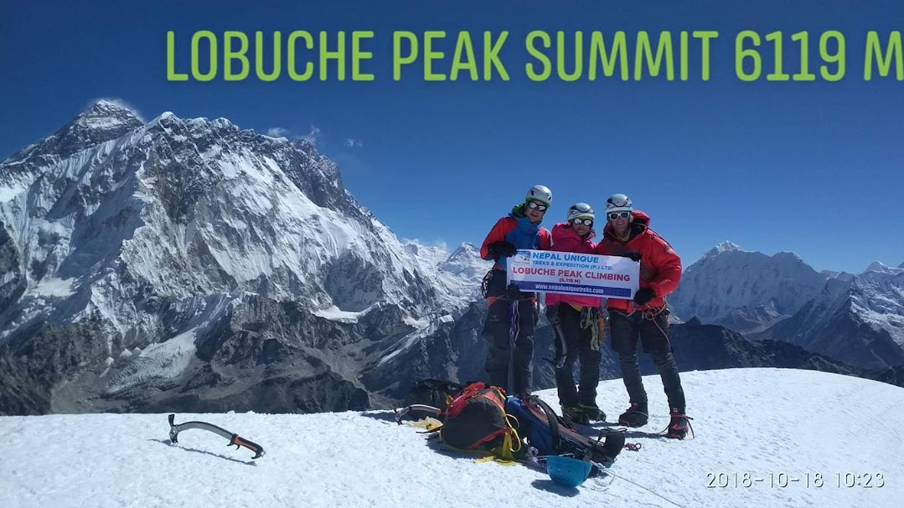
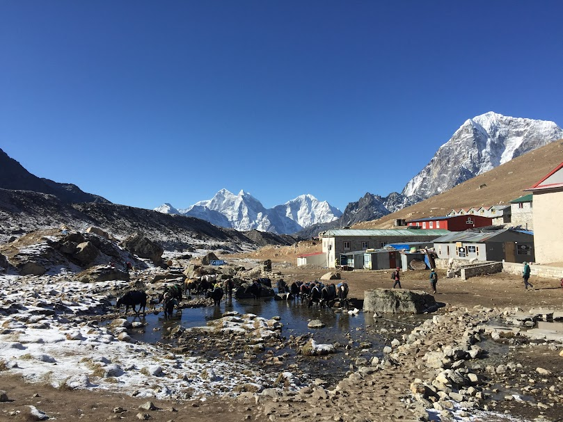
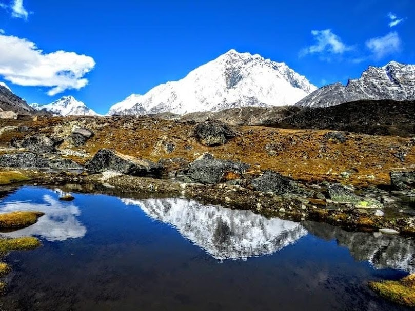
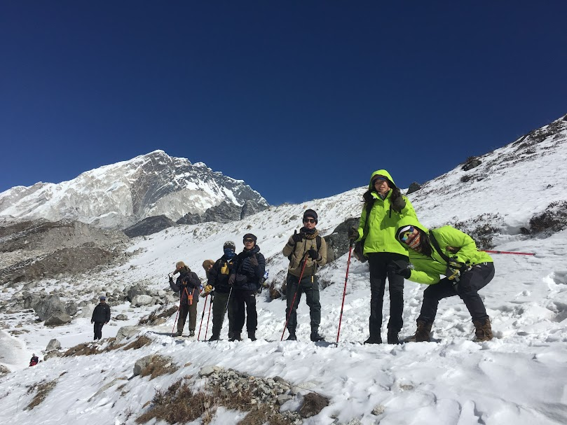
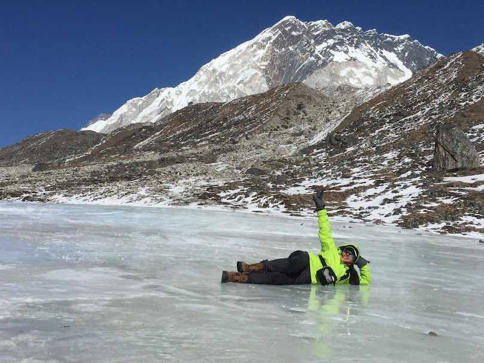
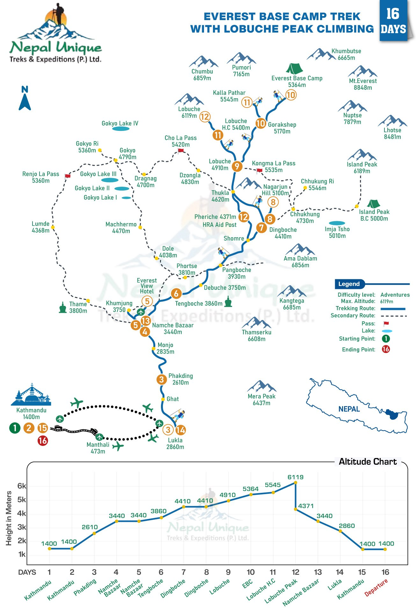

Everest Base Camp with Lobuche Peak Climbing
The Everest Base Camp with Lobuche Peak Climbing - Cost & Itinerary for 2026, and 2027 Experience the ultimate trekking and climbing expedition in Nepal, combining the iconic Everest Base Camp trek with a thrilling Lobuche Peak summit (6,119m). Nepal Unique Treks finds ways in which the trekkers get the most out of the journey in a single trek.





Key Trip Facts
Trek Overview
Trip Highlights
Everest Base Camp with Lobuche Peak Climbing Overview
The Everest Base Camp with Lobuche Peak Climbing - Cost & Itinerary for 2026, and 2027 Experience the ultimate trekking and climbing expedition in Nepal, combining the iconic Everest Base Camp trek with a thrilling Lobuche Peak summit (6,119m). Nepal Unique Treks finds ways in which the trekkers get the most out of the journey in a single trek. Everest Base Camp with Lobuche Peak Climbing is one of them. After Island Peak Climbing, Lobuche Peak Climbing is the most popular peak climbing in the Khumbu Region. Situated just above the Lobuche Village, two major peaks; Lobuche East (6,119 meters) and Lobuche West (6,114 meters) connected via a knife-edge ridge. So, get ready to explore the Himalayas with us on this journey.
The journey to the Lobuche Peak starts with an adventurous flight to The Gateway to Everest, Lukla. Moving further, traversing through the terrains, crossing the suspension bridges, exploring the local community, and acclimatizing at different altitudes, we reach Everest Base Camp and Lobuche Base Camp. After summiting the peak and enjoying some moments we retrace our way back to Lukla and fly back to the capital.
On the path, we will explore much more than just the nature. The lifestyle up in the Himalayas is quite different and has much more to offer culturally as well as religiously. Furthermore, the historical and traditional monuments like stupas, gompas, and museums hold a great significant value to the local community. Moreover, the floras, faunas, lush hills, and mountain peaks make the trail enjoyable to traverse.
Submitting a Lobuche Peak is a bit challenging consisting of a steep climb on the rocky and icy surface, but the rewards await when you reach the peak. The panoramic views of the mountain peaks and glaciers from the top of the Lobuche Peak are mesmerizing to the eyes. So, if you are looking for a journey to explore the Himalayas with peak climbing adventure, the Everest Base Camp trek with Lobuche Peak Climbing stands as the best for you.
Why choose Nepal Unique Treks for this trek?
Nepal Unique Treks specializes in planning and organizing treks all over Nepal. For the last two decades, we have been helping domestic as well as international trekkers to conquer their trekking journey smoothly. Throughout these years, our guides have accumulated all the information required to ensure a safe and sound journey. Moreover, the guides we have in the team are government license holders and have been in this sector for over a decade.
Our services are not limited only to Nepal, but also we plan and organize treks in Bhutan and Tibet as well. Furthermore, you can customize the itinerary according to your preferences, and we will proceed accordingly on this journey. Below are some additional information on why we are the perfect choice for Luxury Everest Base Camp Trek:
Skilled and experienced guides will help you from the very beginning of the trek ensuring a better journey.
Prioritizing the best experience in the entire journey, we ensure that we provide you with the best services in every meal served and place accommodated.
Permits required for Everest Base Camp with Lobuche Peak Climbing
In Nepal, we require a permit to enter the protected areas of certain regions. These permits are crucial as they are verified by the local officers at the checkpoints. Only then we are allowed to pass through those areas. The permits required are:
Sagarmatha National Park Entry Permit
Climbing permit issued by Nepal Mountaineering Association (NMA)
Trekker's Information Management System (TIMS) Permit
You need the first permit to enter Sagarmatha National Park en route and the second permit required to summit the Lobuche Peak. Without these permits, you cannot pass through those areas.
TIMS Permit is a special type of permit that helps the government official track the trekkers ensuring their safety and well-being.
In Nepal Unique Treks, we help you to get these permits without any hassle. Let us streamline the process for getting these permits while you prepare for the trek.
Why is Insurance necessary for Everest Base Camp with Lobuche Peak Climbing?
In the adventurous journey to the Himalayas, there can arise few cases due to which we might require emergency evacuation or medical attention. And these are too costly for anyone who is just coming out in nature to enjoy during the trek. This is where the Insurance we do before starting the trek comes in handy. Without any hassle and worry, we get the required services even in the emergency cases in such altitude.
To begin with, there are different types of insurance you can get. Some of them provide medical coverage, emergency evacuation, cancelation insurance, and many more. However, we highly recommend you take the insurance package that covers all of these.
We will be trekking in the most favorable seasons like spring and autumn. However, there is always a possibility of some changes in the weather. Only a simple change in weather can disrupt our trek and can lead to other emergencies as well. Therefore, to ensure things go smoothly even in emergency cases, we recommend you get the full package of insurance. Furthermore, our guides will always be there to assist and navigate you even in emergency cases. This way we can ensure you have a great journey with all the safety.
Everest Base Camp with Lobuche Peak Climbing Itinerary: Day by Day
16 Days program for Everest Base Camp with Lobuche Peak Climbing. Daily timings and sequences remain flexible according to weather, flight operations, and group pace.
Day 1: Arrival in Kathmandu Nepal and Drive to Hotel, 1345m.
Approx. 1,345 m / 4,413 ft
As you land at the Tribhuwan International Airport, Kathmandu, our guides will welcome you with khadas and flower bouquets. In the airport, you will also see a lot of other trekkers and travelers coming to Nepal for some adventure and exploration. From the airport, the Nepal Unique Treks guides will drive you to the hotel. At the hotel, the staff will welcome you with a welcome drink before you check in and get refreshments. Besides, on your way to the hotel from the airport, you will get your eyes on Nepal's rich culture, including temples, vibrant markets, and different ancient infrastructures. There might be a little more traffic during the office time. However, the drive will certainly be amazing and experience-worthy. As you stroll around the city area for the rest of the day, you can return to the hotel for authentic Nepali cuisine as dinner. Once you are done with the dinner, you can go for a comfortable and cozy sleep in the hotel room.
Day 2: Trek and Peak Climbing Gear Preparation,1345m.
Approx. 1,345 m / 4,413 ft
On the second day, we will stay back in Kathmandu, where the professional guides will prepare you for the Everest Base Camp trek with the Lobuche Peak Climbing trail. The session begins once the trekkers are done having breakfast. Remember that, the guides will thoroughly take you on the EBC with Lobuche Peak Climbing map's visual exploration. Moreover, on this day, you also attend a briefing on the climbing techniques, safety protocols, and what to expect at high altitudes. Simply put, it’s a day to familiarize yourself with the tools and techniques that will help you conquer Lobuche Peak. In the afternoon, you have time to explore Kathmandu’s rich history. A visit to a nearby stupa, such as Swayambhunath Bouddhanath, or Pashupatinath Temple offers a glimpse of the spiritual side of Nepal. Furthermore, you can also try out some local delicacies of Kathmandu before returning to the hotel for dinner and sleep.
Day 3: Drive from Kathmandu to Ramechhap followed by Flight to Lukla (2860 meters) and trek to Phakding or Manzo (2610 meters)
Approx. 2,610 m / 8,563 ft
Our journey towards the Everest region, more specifically, the Everest Base Camp trek with the Lobuche Peak Climbing trail begins on the third day. As you wake up, early Morning at 1 am, get freshened up, and collect your baggage. Then around 2 am, we will start the drive. The 5-hour journey winds through terraced hillsides, quiet villages, and dense forests, offering glimpses of Nepal’s countryside. After nearly four hours, we reach Manthali Airport, a small yet vital hub for flights to the Everest region. As you land at the Manthali Airport (Ramechhap), you will be driven to the airport and flown to the Tenzing & Hilary Airport (Lukla). As the plane glides over deep valleys and towering peaks, the first sight of the Himalayas feels almost surreal. Moreover, the sudden transition from the lowlands to the heart of the mountains is both exhilarating and humbling. Upon landing, our guides will receive you and take you on a quick trek to Phakding. The trail goes past lush forests and pine trees alongside the Dudh Koshi River. Moreover, the trekkers will also pass through several Sherpa settlements on this section of the trek. Furthermore, as we pass through charming Sherpa villages, you will notice that the spiritual essence of the Himalayas becomes ever more present. That is because of the Chortens and intricately carved Mani stones, along with many prayer flags. Within about 3 to 4 hours, we will reach Phakding or Manzo where the trekkers with check in at the hotel and go for a proper rest. However, you can also go for a quick stroll in the nearby areas and interact with the locals. In the evening, we will enjoy a delicious Nepali dinner before going for a restful sleep.
Day 4: Trek from Phakding to Namche Bazaar (6 hours) - 3,444 meters
Approx. 3,440 m / 11,286 ft
As usual in the trekking days, we begin our walk early in the morning after the trekkers have their breakfast in the hotel. From there, the guides take you on a trail that leads towards Namche Bazaar from Phakding. On this day, the trekkers need to walk for about 6 hours and cover a total distance of approximately 9 kilometers or 5.6 miles. This section of the Everest Base Camp Trek with Lobuche Peak Climbing begins with a mesmerizing sound and view of the Dudh Koshi River. Gradually, the trekkers will find themselves walking under the huge rhododendron forests while also crossing some suspension bridges. Furthermore, as this area is highly settled by Sherpas who follow Buddhism, we can also see a lot of prayer flags. Moreover, small Sherpa villages like Toktok and Benkar dot the path, where locals greet us with warm smiles and the scent of freshly brewed butter tea lingers in the air. As we move forward, the sight of snow-capped peaks becomes more prominent, making every step feel like a journey into the heart of the mountains. Within the next few hours, we will reach a place named Monjo, which is also the entrance to the Sagarmatha National Park. Here, you need to get the permits checked before going ahead with the trial. Moreover, we can also sense the entire terrain shift from this part of the trek. We will also cross one of the highest and longest suspension bridges of the Khumbu region, the Hilary Suspension Bridge. Besides, the EBC with Lobuche Peak Climbing trail also gets strenuous from here. Nevertheless, as you reach Namche Bazaar, all that tiredness runs away.
Day 5: Acclimatization Day in Namche Bazaar (Hike to Everest View Hotel)
Approx. 3,440 m / 11,286 ft
On the fifth day, we will not ascend any further from the Everest Base Camp with the Lobuche Peak Climbing Trail. As we have reached an altitude sickness-prone area (above 3000 meters), we take a rest today. Trekkers require this rest or acclimatization day to adapt to the thin air and extreme climatic conditions of the higher altitude. Remember that, from Namche onward, the trail becomes more strenuous and less developed. However, that does not mean that we will sit idle in the hotel for the entire day. Rather than staying idle, we embark on a short yet short and quick hike to the Everest View Hotel (3,880m). The trail ascends steeply out of Namche, passing through pine forests and offering panoramic views of the surrounding peaks. As we gain elevation, the first clear views of Everest, Lhotse, and Ama Dablam emerge, making every step worthwhile. At the Everest View Hotel, the trekkers can enjoy the most amazing view (till this part of the trek) of Mount Everest while sipping tea. We will return to Namche after you stay for a while in the Everest View Hotel. Upon reaching Namche, we recommend the trekkers go for a quick stroll of the town, interact with the locals, and try some mouth-watering locally-prepared delicacies. By the evening, return to the hotel for a delicious dinner and overnight stay in Namche Bazaar.
Day 6: Trek from Namche Bazaar to Tengboche (4 hours) - 3860 meters
Approx. 3,860 m / 12,664 ft
From Namche Bazaar, the EBC with Lobuche Peak Climbing journey takes a little difficult turn. Trekkers need to be ready with the precautions for altitude sickness as we will be over 3500 meters above sea level. Besides, we recommend the trekkers go for a slow and steady walk from this section of the trek. As we leave Namche Bazaar, the path gradually descends to the riverside settlement of Phunki Tenga, where we cross a wooden bridge over the Dudh Koshi River. Here, we take a short break before beginning the steep, steady climb through rhododendron and pine forests toward Tengboche. Tengboche is one of the famous places of the Khunbu region and a crucial checkpoint for any EBC Trekking journey. This village got its name from the Tengboche monastery, the oldest and largest monastery in the entire Khumbu region. You will feel tireless once you sense the serene and peaceful environment with prayer hymns and bells tolling. After settling into a teahouse, we visit the monastery to witness the evening prayers, a peaceful and humbling experience amidst the mountains. Overnight stay and dinner will be arranged by Nepal Unique Treks at Tengboche.
Day 7: Trek from Tengboche to Dingboche (4 hours) - 4410 meters
Approx. 4,410 m / 14,469 ft
As you wake up early in the morning and have your breakfast at Tengvoche, our guides will lead you on a path that covers almost 10 kilometers of distance. It might take us approximately 4 to 5 hours for us to cover this section of the Everest Base Camp Trek with the Lobuche Peak Climbing trail. The route begins as we descend through a lush rhododendron and pine forest that follows the Imja Khola. A little later, we will reach a peaceful and quiet village named Deboche. Here, the trekkers can explore a century-old nunnery before heading towards Pangboche. Once we reach Pangboche, we can witness that the surroundings become more dry and rugged, and the air gets thinner. Reaching Dingboche means entering the alpine valley with very few plantations and too much sand blowing with the wind. However, the views that we get of some towering peaks like Ama Dablam, Lhotse, and Island Peak make our strenuous journey worthwhile. Upon arrival in Dingboche, we settle into a cozy teahouse, where the crisp mountain air and the dramatic scenery remind us that we are now deep in the heart of the Himalayas.
Day 8: Day Trip to Nagarjuna - 5000m and back to Dingboche (5 to 6 hours)
Approx. 5,000 m / 16,404 ft
Today, we take a crucial acclimatization hike to Nagarjuna Peak, a stunning viewpoint above Dingboche. The trail ascends steeply over rocky terrain, demanding effort but rewarding us with breathtaking panoramic views of Makalu, Lhotse, Ama Dablam, and Island Peak. From the top of Nagarjuna's viewpoint, you can also get a view of the endless Himalayas and the valleys. It takes about 5 to 6 hours for any average trekker to go to this viewpoint and return to Dingboche. As you return to Dingboche, we recommend the trekkers explore the village and interact with the locals to learn more about the place. Moreover, you can also talk to the guides about anything you would want to know. After that, you can return to the hotel for a local Nepali dinner and cozy sleep at an altitude of 4940 meters above sea level.
Day 9: Trek from Dingboche to Lobuche (6 hours) - 4940 meters
Approx. 4,940 m / 16,207 ft
On the eighth day, our target will be to reach an altitude of 4940 meters. Even though it is not much of an altitude to cover, the thin air and rugged terrain make it challenging and strenuous for sure. Moreover, the chances of altitude sickness also increase significantly. This six-hour-long walk in the Everest Base Camp Trek with Lobuche Peak climbing journey offers majestic views of mountains like Taboche, Cholatse, and Nuptse, while also taking us past different smaller settlements and very few tea houses. Before Lobuche, we will stop at a village (checkpoint), named Thukla. From here, we need to go for a steep climb to the Everest memorial, a collection of stone cairns honoring climbers who lost their lives in these mountains. After that, we can feel that the trail levels out and we reach Lobuche walking over a comparatively easier trail than we walked a few hours ago. Lobuche, also known as the Lobuche base camp, is a small settlement beneath the mighty Lobuche Peak. As the sun sets behind the rugged ridges, the temperature drops, reminding us that we are now just a day away from reaching Everest Base Camp. Take your time to go for a sound sleep after having a delicious and fulfilling dinner.
Day 10: Trek to Gorakshep - 5180 meters and Hike to EBC - 5364 meters (7 to 8 hours)
Approx. 5,364 m / 17,598 ft
On the tenth day of this adventurous EBC with Lobuche Peak climbing journey, we finally reached the Everest Base Camp. That also makes it one of the highly anticipated days of the entire trekking journey. We will start the journey through a gradually ascending trail that takes us past rocky, glacial terrain, with stunning views of the Khumbu Icefall and surrounding peaks. It takes about 3 hours for us to cover the trail from Lobuche to Gorakshep which is about 4.5 km. In Gorakshep, we will go for a short break before heading out on a final stretch to the Everest Base Camp. From here, we will experience a rugged and undulating trail that takes us past the rocky moraine of the Khumbu Glacier. Within about a couple of hours, the trekkers will step on the base camp of the tallest peak in the world. Upon reaching the EBC, you will notice colorful prayer flags fluttering against the icy backdrop, and the towering face of Nuptse looming above. Well, we know that it will be one of the proudest and most emotional moments for the trekkers to be at the Everest Base Camp. Therefore, we recommend you capture as many memories (photos and videos) as possible before returning to Gorakshep. At Gorakshep, you can go for a well-deserved rest before we continue on the Everest Base Camp Trek with the Lobuche Peak climbing map again on the next day.
Day 11: Early morning hike to Kalapatthar - 5550 meters (2 hours) and Hike to Lobuche East Base Camp - 5400 meters (4 to 6 hours)
Approx. 5,400 m / 17,717 ft
As you wake up on the twelfth day, an adventurous and thrilling journey awaits you. We recommend the trekkers wake up at around 4:00 A.M to 4:30 A.M., as it will be a sunrise hike to the Kalapatthar viewpoint. Located at an altitude of 5550 meters, this is the highest viewpoint of the entire Khumbu region or the Everest trekking region. Besides, we need to walk for about 2 hours from Gorakshep to reach Kalapatthar. As it will be an early morning hike, we request the trekkers carry headlamps and a trekking pole. The viewpoint has some amazing panoramic views of the snow-covered mountains to offer you. However, the main thing that you will see is the sunrise from one of the highest viewpoints in the Himalayas. After spending a couple of hours in Kalapatthar, we will descend to Gorakshep. Here, a delicious and fulfilling breakfast will be waiting for you. As you have breakfast and rest for a while, the guides will again take you for a hike to the Lobuche East Base Camp (5,400 meters). This trail follows rocky moraines, gradually gaining altitude as we leave the main trekking route behind. Besides, the terrain becomes more rugged, with stunning views of Lobuche Peak and the surrounding glaciers. In the Lobuche East Base Camp, you will go for another night's dinner and rest before ascending to the Lobuche Peak.
Day 12: Trek from the Lobuche East High Camp to Lobuche Summit - 6119 meters (8 to 9 hours) and back to Pheriche
Approx. 6,119 m / 20,075 ft
Today is the day for us to ascend to the Lobuche Summit from the Lobuche East High Camp. Another one of the highly anticipated days in the 17-Day Everest Base Camp Trek with the Lobuche Peak Climbing package. Remember that, we will be ascending to an altitude of 6119 meters above sea level. Therefore, we recommend that trekkers be prepared with professional summiting gear and altitude sickness precautions. We begin the climb before dawn, navigating steep, icy slopes using ropes, crampons, and ice axes. Besides, the final stretch requires technical climbing. However, as we reach the summit, you will get the most panoramic and breathtaking views of Everest, Lhotse, Nuptse, Ama Dablam, and countless other Himalayas across the horizon. After spending some time in the Lobuche Peak, we descend towards the East High Camp and then to Pheriche (4,250 meters). As the descending trail is comparatively steep, it will not take much time for us to reach Pheriche. At Pheriche, we recommend the trekkers go for proper rest as they have just returned from a peak climbing adventure.
Day 13: Descend from Pheriche to Namche Bazaar - 3,444 meters (6 hours)
Approx. 3,440 m / 11,286 ft
After an adventurous ascend to the Everest Base Camp and a thrilling Lobuche Peak climb, it is now time to descend on the EBC with the Lobuche Peak Climbing route. As this is a descending journey, we will cover an approximate distance of 20 kilometers in about 6 hours on this day. The trail follows the Imja Khola River, passing through Pangboche, where we catch our last glimpses of Ama Dablam up close. As we continue downhill, the air grows richer in oxygen, making the walk feel easier despite the long distance. We will stop for a short break at Tengboche and have some lunch before continuing the descending journey. Furthermore, this also offers another chance to visit the significant Tengboche Monastery. From this spot, the trail delves into lush forests up until Phunki Tenga. From here, a final ascent brings us back to the lively streets of Namche Bazaar (3,444m), where the comforts of bakeries, cafes, and warm teahouses await. Here, the trekkers can rest properly while also sharing their experiences of the EBC trek and Lobuche Peak climb.
Day 14: Namche Bazaar to Lukla Descending Journey (7 to 8 hours)
Approx. 2,860 m / 9,383 ft
Another day calls for another huge distance to cover as we walk about 19 kilometers in just 7 to 8 hours. After having breakfast in Namche Bazaar, the guides will take you on a steep downhill train to Lukla. This part of the Everest Base Camp Trek with Lobuche Peak Climb passes through dense pine and rhododendron forests, crossing suspension bridges over the Dudh Koshi River. Moreover, we will also pass through some villages like Monjo and Phakding before finally reaching Lukla around the mid-afternoon. As we reach Lukla, the trekkers can take their time to feel the warmer air and soft terrain, while enjoying some final views of the Khumbu valley. Today, we will not return to Kathmandu as we need to rest for a day. Therefore, we recommend the trekkers utilize the rest of the day to stroll around the village and interact with the locals. In the evening, we will have a final dinner in the Khumbu region before going for a final sleep here as well.
Day 15: Flight from Lukla to Ramechhap (20 minutes) and Drive to Kathmandu (5 hours)
Approx. 1,345 m / 4,413 ft
On the sixteenth day, the trekkers will wave a final goodbye to the Khumbu and Everest regions. Breakfast will be served at the restaurant and if the flight is scheduled later in the day, you might as well have lunch in the hotel. After that, our guides will take you to the Tenzing & Hilary Airport (Lukla) for a scenic and adventurous flight back to Ramechhap. Within the next 20 minutes of enjoying some amazing aerial views, you will land at the Manthali Airport (Ramechhap). Here, a comfortable tourist bus with proper leg space will be waiting to drive you back to Kathmandu. As you board the bus, it will take you on a 5-hour-long adventurous drive to Kathmandu. We will drop you at the hotel where you can check in before going for a quick stroll of the nearby areas. In the evening, the Nepal Unique Treks team invites you for a farewell dinner. This dinner will also have a certificate-giving ceremony for the successful completion of the Everest Base Camp Trek with Lobuche Peak Climbing.
Day 16: Return to your country or continue further exploration
Approx. 1,345 m / 4,413 ft
Today, we finally mark the end of the 17-Day Everest Base Camp Trek with the Lobuche Peak Climbing package. If you plan to return to your country, our representatives will drive you to the airport in a private vehicle. However, if you have plans to stay back in Nepal for further exploration, we can also manage that for you.
What is Included (Regular Package)
What is Excluded
Booking Dates & Availability
Packing List for Everest Base Camp with Lobuche Peak Climbing
Fixed ropes, ice bars, and group climbing hardware are arranged by our Sherpa climbing crew; personal technical gear can be checked in Kathmandu.Technical Mountaineering Hardware (5 items)
Summit Apparel & Protection (4 items)
High-Camp Sleep & Approach (3 items)
Read before you book: Everest Base Camp with Lobuche Peak Climbing
Practical logistics derived directly from this package's route facts, inclusions, and elevation profile.
Accommodation & Meals (Hotel, Guesthouse, Camping)
Accommodation follows the package grade (Hotel, Guesthouse, Camping) in Kathmandu and along the Everest route. Check your package Includes section for included meals and Kathmandu hotel nights.
Permits & Local Logistics
Transportation is arranged via Flight, Car, Van. Applicable permits listed in the package inclusions are arranged by Nepal Unique Treks prior to departure.
Route Difficulty & Elevation (6119 m)
Everest Base Camp with Lobuche Peak Climbing is rated Moderate to Challenging with a maximum elevation of 6119 m. Follow your guide's pacing and stay hydrated throughout the 16 Days itinerary.
Best Time to Visit (Spring and Autumn)
Recommended operating season on the source page: Spring and Autumn. Additional official notes from the source page follow below.
Traveller Useful Information
The overall difficulty of this trek is considered to be moderate which requires technical aspects of mountaineering while climbing Lobuche Peak. Moreover, the trails consist of steep ascents, and rocky terrain with long hours of hiking every day which can be exhausting. So, we must be in perfect physical condition and have the skills to complete this journey.
The highest point we reach is Lobuche East Peak summit (6,119 meters). At such altitude, the altitude sickness is the biggest concern. Therefore, we need to prioritize acclimatizing and letting our body adapt to the higher altitudes where the oxygen levels are low.
Similarly, the weather conditions can also be challenging and create some level of difficulty while trekking in the mountains. It is important to have stable weather for us to summit the peak. Moreover, we will be trekking in the favorable seasons only. However, a sudden change in weather can alter our course and force us to change our plans. Moreover, there might arise a case of an emergency due to these changes in the weather.
While the trek to the Everest Base Camp is considered moderate, climbing the Lobuche Peak is much more technical and considered a bit difficult. However, the success rate of submitting the peak is high, making it more lucrative for the trekkers. It does require some prior basic climbing skills, which can be helpful while climbing the peak.
To sum up, the Everest Base Camp with Lobuche Peak Climbing is considered challenging, but good physical fitness and some basic skills in climbing and using mountaineering equipment can be beneficial. Great challenges and difficulties await with a panoramic view of the mountains, peaks, and glaciers.
Reaching Everest Base Camp and Lobuche Peak involves multiple modes of transportation. Firstly, we pick you up from the Tribhuvan International Airport (TIA) in a private vehicle. In addition, the connecting flight between Kathmandu and Lukla or (Ramechhap to Lukla 20m flight offers breathtaking views of the Himalayas but is subject to weather delays.
The flight to Lukla can be canceled some days due to the harsh weather conditions. In this situation, you can either continue to reach Lukla via helicopter which will cost about $3,000 for 5 people, or stay for the day and fly tomorrow.
From Lukla, the trek to Everest Base Camp begins on foot. The trail passes through picturesque villages such as Phakding, Namche Bazaar, Tengboche, Dingboche, and Gorakshep before reaching EBC. Moreover, the porters and yaks help carry gear, making the trek more manageable for climbers and trekkers.
For those climbing Lobuche Peak, the journey continues beyond EBC. The base camp for Lobuche Peak is reached after trekking from Lobuche village. Climbers often use additional transport methods such as helicopters for emergency evacuations or to shorten descent times after summiting.
Finally, we can return via Helicopter as well for those preferring a more comfortable return to Kathmandu. Many trekkers opt for a helicopter ride from Gorakshep or Lobuche to Lukla or directly to Kathmandu, saving days of trekking time.
Up in the Himalayas, the weather can change pretty quickly. In the winter season, the weather is pretty harsh and cold. Whereas, in the summer season, due to the bright sunlight during the daytime, traversing through the trail can be difficult. Therefore, the Autumn & Spring seasons are the best for Everest Base Camp with Lobuche Peak Climbing.
Spring Season is one of the most preferable seasons. The weather conditions are favorable with moderate temperatures, and the skies are clear, giving us perfect views of the mountain peaks, landscapes, and terrains. However, during the early months of this season, we can witness light snowfall which can be challenging in a few sections of the path. Moreover, the wildflowers start to bloom and we get to see lush hills and rhododendrons along the way making the path more beautiful.
Similarly, the Autumn Season is also quite favorable as the weather is consistent with fewer chances of extreme weather conditions. Additionally, the sky is also clear during the daytime with few clouds in the afternoon allowing us to get clear views along the route of the surroundings. However, in the nighttime the temperature decreases gradually, making it a bit colder in the Himalayas. Moreover, the fallen leaves and the flowers create a beautiful carpet of orange foliage en route.
After a tiring trek during the daytime good meals and sleep are a must for our body to recover. On the entire trek, there is a wide range of options for food and accommodation according to different places. Furthermore, we ensure to arrange a stay that provides a healthy meal and accommodation with the best amenities.
For the meal, it can vary from place to place. In the early days of the trek, we have multiple restaurants, lodges, and tea shops that provide Nepalese, Tibetan, and Western Cuisine. But as we ascend, tea shops become the only source for our meal. And, they normally offer local Nepalese and Tibetan Cuisine which is enough for us to keep moving on. Similarly, during camping as well, there will be few options for meals.
Regarding the accommodation, there are multiple lodges and tea shops on the way during the initial days. From expensive to affordable, all types of accommodation can be found. They have all the amenities we need during our stay. However, there are normally tea shops when we ascend on our journey, which provides just basic amenities. As we reach the base camp, we will be staying in the camp which also will be arranged by us.
For and trek above 2,500 meters, altitude sickness is quite common. Altitude Sickness is a condition that happens when your body has trouble adjusting to lower oxygen availability at high elevation. There are many symptoms according to the severity like headache, nausea, shortness of breath, loss of appetite, dizziness, and fatigue.
Also known as Acute mountain sickness (AMS), can get severe if not treated on time. High altitude pulmonary edema (HAPE) & High altitude cerebral edema (HACE) are more severe forms of AMS, where our lungs and brains. Therefore, it is crucially important to listen to our body and get medical attention if there is any sense of uneasiness throughout the journey.
Since altitude sickness affects everyone differently, so it’s crucial to stay alert and take action at the first sign of discomfort. With proper precautions like gradual ascent, hydration, and nutrition, you'll be well-prepared to complete and enjoy your trek.
Furthermore, proper acclimatization is the key to overcoming altitude sickness. Nepal Uniques Treks has strategically planned acclimatization in different sections of this itinerary. This will help your body to gradually adapt to the altitude and the oxygen levels at higher elevations.
To summarize, while AMS is common in higher altitudes, it can be prevented with proper acclimatization, along with having nutritious food and hydrating properly. Moreover, the experienced guides of Nepal Unique Treks will help you along the trail if there is any emergency case.
There are multiple things you need to pack before starting this trek. Since the availability of the items in the trek can vary from place to place. And as we ascend the probability of getting those items is much lesser. Therefore, it is recommended to pack these items as per your necessity as well. Below is a list of items that you need to pack:
Waterproof Trekking Shoes
Thick Warm Woolen Socks
Trekking Trousers
Thermal T-shirt (Long Sleeves)
Down Jacket
Waterproof Jacket
Warm Waterproof Gloves
Headlight for Night or Sunrise Hike
High-Quality Trekking Poles
Day Backpack
Waterproof Bag
Thermal Water Bottle
First Aid Kit
Power Bank
Snacks (Energy Bars and Power Gel)
Trekking Trail Map
Mobile Phone and Power Bank for Mobile Charging
Padlock and Key for Safe Backpack
Sun protection cream, wet wipes, and hand sanitizer
Sleeping bags suitable for cold temperature
Sunglasses, sun hat, or woolen cap
Medicines, Toiletries
Regarding the booking process for this journey, we have multiple options. You can directly message us on WhatsApp, Zalo, or Viber at +9779851023285. Also, you can email us at info@nepaluniquetreks.com or nepaluniquetreks@gmail.com. Moreover, we also customize the itinerary according to your requirements and make sure your trip goes according to your plan.
After you choose how you want to proceed with the itinerary, for the booking we require a 30% deposit to secure your spot. In addition, you can communicate with our team directly regarding payment methods.
Once your booking is confirmed, we will provide you with additional information to help you prepare for your trip. If you have any questions about the booking process, feel free to contact us anytime.
Altitude Profile of Everest Base Camp with Lobuche Peak Climbing
Weather on Everest Base Camp with Lobuche Peak Climbing
Everest Base Camp with Lobuche Peak Climbing Route Map

Book This Trek
Contact our Kathmandu coordinators using the booking panel for private or fixed-group departures.
Trip Feedback
Explore verified traveller stories or leave feedback on Nepal Unique Treks.
Visit Nepal Unique Treks